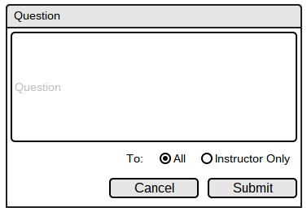
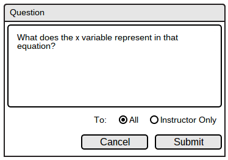
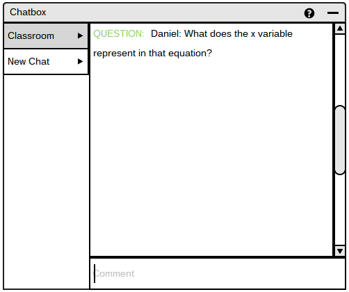

2.7.2. Student Question Asking
To ask a question, student clicks on the question icon as shown in Figure 86.
This pops up a "Question" window, as shown in Figure 89, in which the student may enter in a question, set the visibility of the question and click Submit to ask a question.

Figure 89: Question Window

Figure 90: Filled Question Window
Once the user types out the question, selects All option for visibility and hits the Submit button, the question is posted onto the Classroom chatroom as shown in Figure 91.

Figure 91: Chat with Question
If the user chose Instructor Only as the visibility option, then the question does not appear in the chatbox and only appears for the instructor, on his/her roster.
Prev: public-chat
| Next: question-manage
| Up: Chatbox
| Top: index